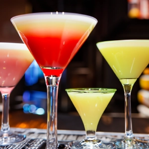

Martinier
Martinier er elegante cocktails, der består af gin eller vodka og tør vermouth, serveret i et køligt glas. Denne klassiker er kendt for sin forfinede smag og enkelhed. Martinier tilbyder en perfekt balance mellem spiritus og vermouth, hvilket gør dem til det ideelle valg for dem, der sætter pris på tidløs elegance.